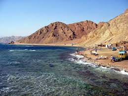
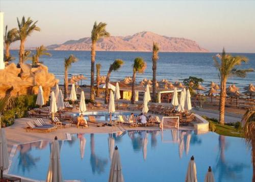
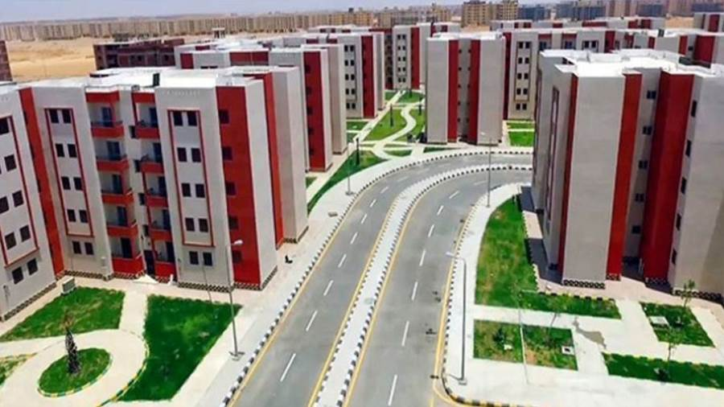

انجازات الرئيس عبد الفتاح السيسى فى سيناء
افتتح عبد العال البدري سكرتير عام
المحافظة نائبًا عن اللواء دكتور محمد عبد الفضيل شوشة محافظ شمال سيناء، يوم الأربعاء 29
مايو محطة رافع مياه جنوب المساعيد بطاقة إجماليه 20 ألف متر مكعب
(تكديس) تغذي مدينة العريش، وتبلغ مساحة المحطه 6.5 فدان، وتعتمد المحطة علي مصادر
المياه من خط الـ1000 مم القادم من القنطره وخط 500 من محطات التحليه بالمساعيد.
وذلك بحضور المهندس علاء
الدين إبراهيم رئيس الجهاز التنفيذي للمياه والصرف الصحي بالهيئة والمهندس مصطفى عبدالفتاح رئيس الشركة القابضة بشمال سيناء والمهندس
محمد شحاته رئيس مرفق المياه بالمحافظة والمهندس مبارك منصور مبارك رئيس القطاع مدير فرع سيناء والمهندس حامد عبدالله نائب مدير الفرع
المشرف على مشروعات شمال سيناء والقنطرة شرق والمهندس محمد القصاص مدير مشروعات العريش.
جدير بالذكر أن المشروع عباره عن خزانات أرضية بسعة
20ألف م3 حيث يستقبل المياه من خط 1000 القادم من القنطرة شرق وخط 500مم القادم من محطة تحلية مياة البحر بالمساعيد، كما يتكون ايضا من عدد4 طلمبات رئيسية ونزح ورفع متنقلة ومبنى المحولات ومبنى الكلور ومبنى المولد الذي يقوم بتوليد
الطاقة الكهربائية بقدرة 750 ك ف 1 والتى تعمل أتوماتيكيا حال إنقطاع التيار الكهربائي
عن الرافع، كما يتكون المشروع من المبنى الإداري وغرف المراقبة
والأمن على الأسوار وذلك بقيمة إجمالية 100مليون جنيها.

انجازات الرئيس عبدالفتاح السيسى فى سيناء
قال النائب فايز أبو حرب إن هناك العديد من الاستثمارات والمقومات الصناعية
والزراعية الضخمة بسيناء ومدن القناة حيث تم وجار تنفيذ استثمارات لتنمية شبه جزيرة سيناء بأكثر
من 700 مليار جنيه خلال 8 سنوات وبلغ إجمالي الاستثمارات العامة التي تم وجار ضخها لتنفيذ مشروعات قومية بسيناء ومدن القناة نحو
358.1 مليار جنيه، وذلك في الفترة من عام 2013/2014 حتى عام 2022/2023 مشيداً بافتتاح 3 مراكز لخدمة المستثمرين
بتكلفة 215.5 مليون جنيه لخدمة أكثر من 8800 شركة، فيما تتمتع سنة وانت طيبة ٣ الله يناء ومدن
القناة بـ 339 فرصة استثمارية على الخريطة الاستثمارية، بالإضافة إلى 143 فرصة صناعية .
انجازات الرئيس عبدالفتاح السويس فى سيناء
قال النائب فايز أبو حرب إن تكلفة مصنع إنتاج الرخام والجرانيت برأس سدر بلغت 727 مليون جنيه وبلغت تكلفة إنشاء المجمع الصناعي للرخام بمنطقة "الجفجافة" بوسط سيناء 805 ملايين جنيه، وذلك بطاقة 3 ملايين م2 سنوياً، كما بلغت الطاقة الإنتاجية لمصنع أسمنت العريش 7 ملايين طن سنوياً، بينما تبلغ تكلفة المجمع الصناعي الحرفي بالعريش 50 مليون جنيه مشيداً بالمشروعات المتوسطة والصغيرة ومتناهية الصغر في سيناء ومدن القناة بعد أن تم تمويل 47 ألف مشروع من جهاز تنمية المشروعات المتوسطة والصغيرة ومتناهية الصغر بقروض بلغت نحو 2 مليار جنيه وفرت 84.6 ألف فرصة عمل، وكذلك تم تمويل 5614 مشروعاً من المشروع القومي للتنمية المجتمعية والبشرية والمحلية "مشروعك" بقروض بلغت قيمتها 804.4 مليون جنيه ووفرت 56.9 ألف فرصة عمل، وذلك حتى أغسطس 2022 .
 Home|انجازات الرئيس عبدالفتاح السويس فى سيناء
وصف النائب فايز أبو حرب المشروعات القومية الكبرى التى اطلقها الرئيس السيسى فى سيناء بالتاريخية وغير المسبوقة مشيراً الى أن مشروع تنمية سيناء تصل مساحته الإجمالية إلى 1.1 مليون فدان منها 285 ألف فدان مساحة منزرعة بالإضافة إلى إنشاء 18 تجمعاً زراعياً بإجمالي مستفيدين 2122 مستفيداً، إلى جانب الانتهاء من 186.5 ألف فدان من الأراضي الجديدة ضمن المرحلة الأولى لمنظومة الري الحديث في شمال سيناء والإسماعيلية والسويس، وإنشاء 481 منشأة للحماية من السيول في محافظتي شمال وجنوب سيناء مؤكداً أن هذه المشروعات الزراعية الكبرى سوف تغير وجه الحياة داخل شمال سيناء وجميع المحافظات والمدن بمنطقة القناة .
